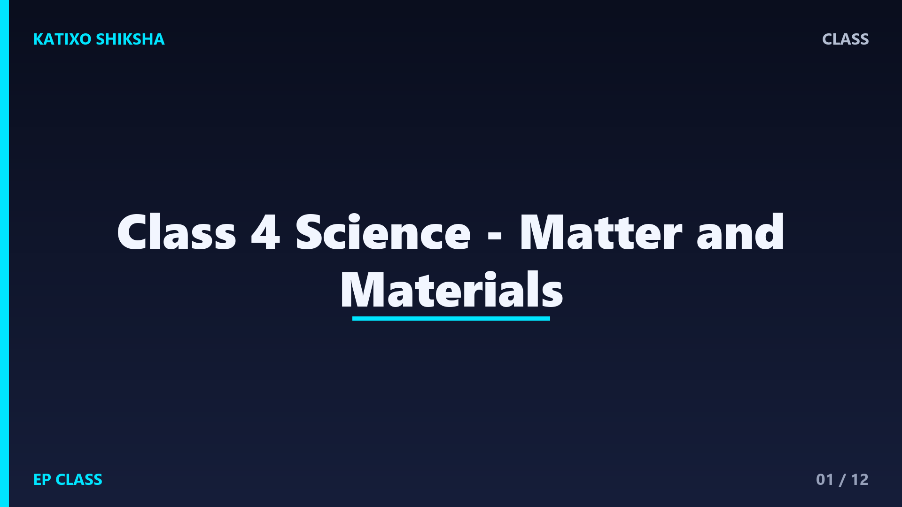
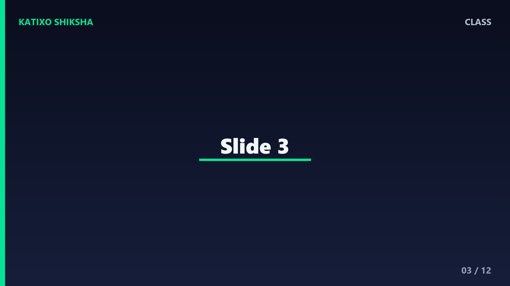
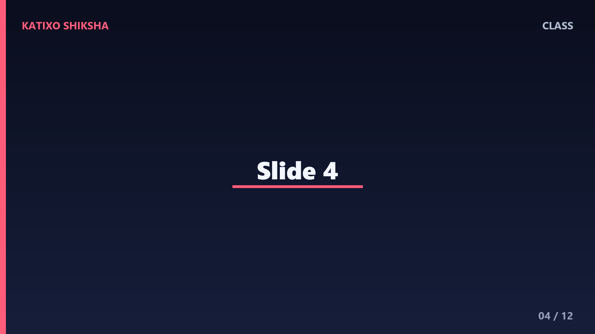
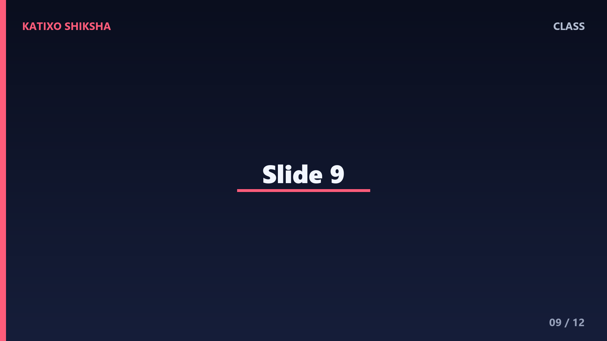

Class 4 Science - Matter and Materials

Slide 1Matter is anything that takes up space and has weight. Your pencil, water bottle, school bag, air inside a balloon, and even steam are examples of matter. Studying matter helps us understand materials around us.

Slide 2We usually see matter as solid, liquid, or gas. A solid has a fixed shape. A liquid flows and takes the shape of a container. A gas spreads out and fills space. Ice, water, and steam show these states nicely.

Slide 3Solids have their own shape. A book, table, stone, pencil, and lunch box are solids. Some solids are hard, some are soft. Some can bend, while some break. We choose solids based on their properties.

Slide 4Liquids flow. They do not have their own fixed shape, so they take the shape of the container. Water, milk, oil, and juice are liquids. Some liquids are thick, while some flow quickly.

Slide 5Gases spread in all directions. Air is a gas mixture around us. We cannot see air, but we can feel it when the wind blows. A balloon becomes bigger because air fills space inside it.

Slide 6Heating and cooling can change matter. Ice melts into water when heated. Water can freeze into ice when cooled. Water can change into vapour when heated strongly. These changes help us understand daily life.

Slide 7Some changes can be reversed. Ice melting into water and water freezing back into ice is reversible. Folding paper may also be reversed if it is not torn. A reversible change can go back to the earlier form.

Slide 8Some changes cannot be easily reversed. Burning paper gives ash and smoke. Cooking dough into bread changes it permanently. Cutting vegetables also cannot make the whole vegetable exactly as before.

Slide 9Objects are made from materials such as wood, metal, plastic, glass, rubber, cotton, and clay. We choose materials because of their properties, like strength, flexibility, transparency, softness, or waterproof nature.

Slide 10Some things dissolve in water. Sugar and salt dissolve. Sand and oil do not dissolve properly. This helps us separate materials and understand mixtures. Try mixing sugar, sand, and oil separately in water.

Slide 11Some objects float on water, and some sink. A leaf may float, while a stone sinks. Floating depends on many things, including material, shape, and weight. This is a fun observation activity at home.

Slide 12Let us revise. What is matter? Name one solid, one liquid, and one gas. What happens when ice melts? Give one reversible and one irreversible change. Why do we choose different materials for different objects?